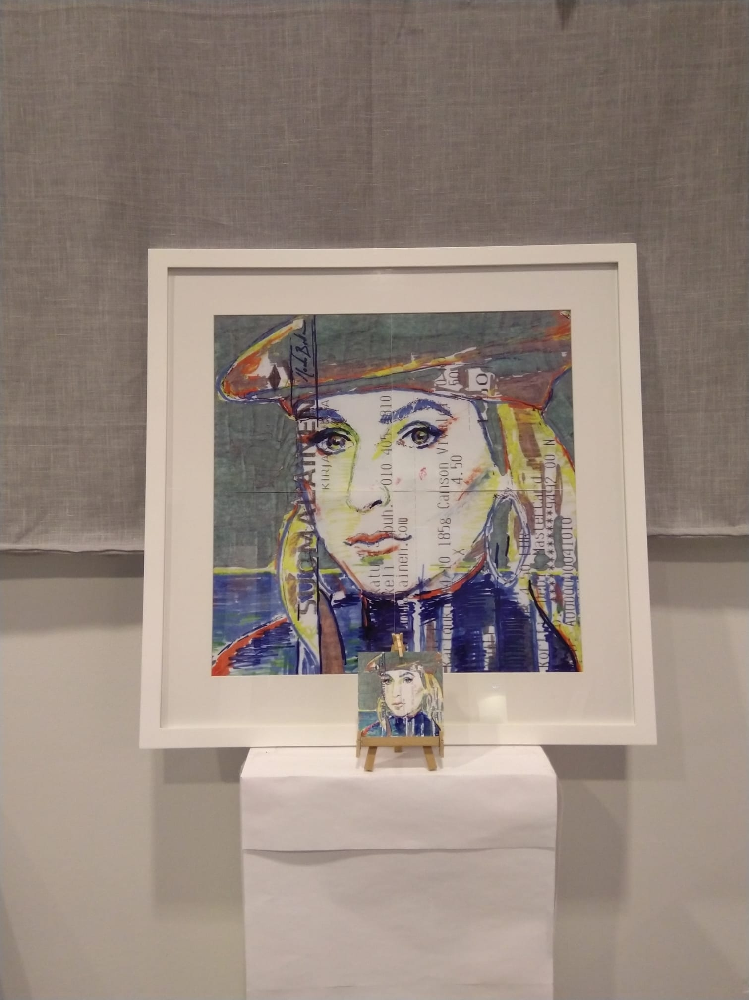

Pop Art de Mako
Kuitit uutena kankaana
Työskentelen usein kirjaston ilmaisissa tiloissa hyödyntäen arkisia kuitteja teosteni pohjana. Kierrätän kuitin taittelemalla siitä neliön, jolloin taitokset, kuitin tekstit ja grafiikka – aikamme piirturit – tulevat osaksi prosessia.
Pienelle kuitille taiteilen aiheen kaikilla käsiini saamilla kynillä. Valmiin piirroksen skannaus ja tulostus tapahtuvat kirjaston laitteilla. Tulostan teoksen usein neljässä osassa, jotka kasaan kehyksiin suureksi yhtenäiseksi kokonaisuudeksi happovapaalle paperille.
Alkuperäinen pieni piirros saattaa haalistua ajan saatossa, mutta suureksi zoomattu tuloste mahdollistaa teoksen ja sen yksityiskohtien tutkimisen ikuisesti. Näin arkisesta kuitista kasvaa kestävä ja kookas taideteos.

Zoomattu todellisuus
Tässä teoksessa näkyy, kuinka pieni kuittipiirros kasvaa suureksi kokonaisuudeksi. Kirjaston laitteilla toteutettu skaalaus tuo esiin kynän jäljen ja kuitin tekstuurin aivan uudessa valossa.
Linnanmäen Syke
Dynaaminen tulkinta kuitin tekstuurilla. Taitokset ja kuitin omat merkinnät rytmittävät huvipuiston vauhtia.

Kolme Piispaa
Sosiaalisen median havainnot ja perinteinen symboliikka kohtaavat kirjaston tiloissa syntyneessä teoksessa.